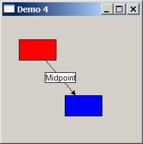

| Example 4 - Connections and Anchors | |
This example shows how to use Connections and ConnectionAnchors. A connection is a figure that visually connects two anchors. The anchors are usually places on figures which the connection is linking. The red and blue "nodes" can be dragged around with the mouse. The connection will re-route itself automatically. The connections children, the "Midpoint" label and the arrowhead, will also update. The connection implementation used here is a PolylineConnection.
This implementation supports decorations, such as arrowheads.
PolygonDecorations added to the connection will be rotated correctly
by a Locator. Other decorations can be added with their own locators,
such as the "Midpoint" label in the demo. |
 |
import org.eclipse.swt.SWT;
import org.eclipse.swt.widgets.Shell;
import org.eclipse.swt.widgets.Display;
import org.eclipse.draw2d.*;
import org.eclipse.draw2d.geometry.*;
public class Demo4 {
public static void main(String args[]){
Shell shell = new Shell();
shell.setSize(350,350);
shell.open();
shell.setText("Demo 4");
LightweightSystem lws = new LightweightSystem(shell);
IFigure panel = new Figure();
lws.setContents(panel);
RectangleFigure
node1 = new RectangleFigure(),
node2 = new RectangleFigure();
node1.setBackgroundColor(ColorConstants.red);
node1.setSize(64, 36);
node2.setBackgroundColor(ColorConstants.blue);
node2.setLocation(new Rectangle(100, 100, 64, 36));
PolylineConnection conn = new PolylineConnection();
conn.setSourceAnchor(new ChopboxAnchor(node1));
conn.setTargetAnchor(new ChopboxAnchor(node2));
conn.setTargetDecoration(new PolygonDecoration());
Label label = new Label("Midpoint");
label.setOpaque(true);
label.setBackgroundColor(ColorConstants.buttonLightest);
label.setBorder(new LineBorder());
conn.add(label, new MidpointLocator(conn, 0));
panel.add(node1);
panel.add(node2);
panel.add(conn);
new Dragger(node1);
new Dragger(node2);
Display display = Display.getDefault();
while (!shell.isDisposed()) {
if (!display.readAndDispatch())
display.sleep ();
}
}
static class Dragger extends MouseMotionListener.Stub implements MouseListener {
public Dragger(IFigure figure){
figure.addMouseMotionListener(this);
figure.addMouseListener(this);
}
Point last;
public void mouseReleased(MouseEvent e){}
public void mouseClicked(MouseEvent e){}
public void mouseDoubleClicked(MouseEvent e){}
public void mousePressed(MouseEvent e){
last = e.getLocation();
}
public void mouseDragged(MouseEvent e){
Point p = e.getLocation();
Dimension delta = p.getDifference(last);
last = p;
Figure f = ((Figure)e.getSource());
f.setBounds(f.getBounds().getTranslated(delta.width, delta.height));
}
};
}
|